Spread of a dengue-like virus in a discrete space
Sebastian Lequime
2019-12-05
Source:vignettes/examples/dengue.Rmd
dengue.RmdIntroduction
In this example, our objective is to simulate a dengue-like epidemic in South-East Asia. Dengue is a dual-host pathogen (arbovirus) that spreads between mosquitoes and humans, with very different within-host dynamics. We will also take into account the location’s influence on mosquito activity by using the local monthly average temperature: the higher the temperature, the more mosquito activity (i.e. the more mosquitoes will bite a human at each time step). Mosquitoes will not move between countries, but humans will; we will use air transportation data to approximate the transition probability matrix between the different countries.
Most of the host parameters used for the simulation will be taken from the following published article:
A. Fontaine, S. Lequime, I. Moltini-Conclois, D. Jiolle, I. Leparc-Goffart, R. C. Reiner Jr. & L. Lambrechts (2018) Epidemiological significance of dengue virus genetic variation in mosquito infection dynamics. PLoS Pathog. 14(7): e1007187. Link
Study site
Our study will focus on 5 south-east Asian countries: China (only the southern part of the country), Cambodia, Laos, Thailand and Vietnam.
Average annual temperature
Here we use WorldClim v2 data (average temperature (°C) - tavg 10m). The rasters are loaded, cut to fit the study site, and the temperature value averaged for all countries (i.e. states in our simulation) each month. Country spatial polygons come from GADM.
#Initial data
#3 letter code of countries of interest:
SE.Asia <- c("CHN","KHM","LAO","THA","VNM")
study.area.SE.Asia <- extent(90, 125, 5, 30) #to crop the raster to the study site
#Load spatial polygones:
library(rgdal); library(raster); library(rgeos)
GADM.admin0 <- readOGR(dsn = "/path/to/your/shapefiles/.", layer = "gadm36_0")
#This loops loads monthly rasters and cuts ("masks") each country. It then computes the average temperature of the country
final.results <- NULL
for(i in 1:12){
if(i < 10) raster.file <- paste("~/path/to/WClim/wc2.0_10m_tavg/wc2.0_10m_tavg_0", i, ".tif", sep="") #for proper file name
if(i >= 10) raster.file <- paste("~/path/to/WClim/wc2.0_10m_tavg/wc2.0_10m_tavg_", i, ".tif", sep="")#for proper file name
temp.raster <- crop(raster(raster.file), study.area.SE.Asia) #loads raster and cuts to study site
country.results <- data.frame()
for(country in SE.Asia){
GADM.admin0.subset <- subset(GADM.admin0, GID_0 == country)
GADM.admin0.subset.simp <- gSimplify(GADM.admin0.subset, 0.1) #Simplifies the polygones
cut.raster <- raster::mask(temp.raster, GADM.admin0.subset.simp, snap="out")
country.results <- rbind.data.frame(country.results,data.frame(country=country, Temp=mean(cut.raster[], na.rm=T)))
}
country.results$Month <- i
final.results <- rbind.data.frame(final.results, country.results)
}
# write.csv(final.results, file="avgTemp_data.csv", row.names = FALSE)For convenience, you can find this data here. We can visualize these data on a map:
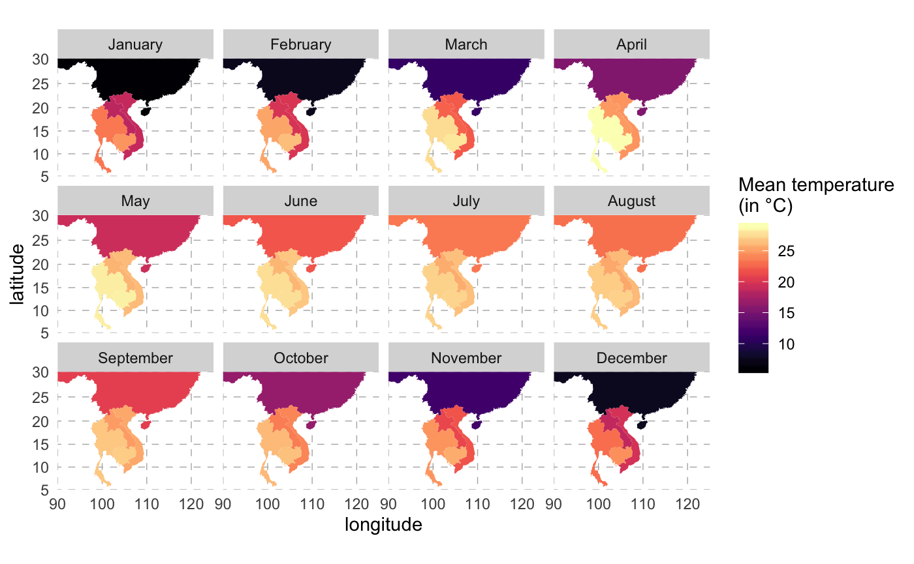
This is the pattern of average temperature for each country over the year:
Using these data, we will fit a trigonometric function to each of the locations to obtain a function that links day of the year to mean temperature. The function will be of the form \(T_{avg} = k_1 \times sin(\frac{2\pi}{365}t) + k_2 \times cos(\frac{2\pi}{365}t) + \beta\) (Eq. 1). We fit this function on data from each location to get the values of \(k_1\), \(k_2\) and \(\beta\):
model.coef <- NULL
for(current.country in SE.Asia){
final.results.country <- subset(final.results, country == current.country)
reslm <- lm(final.results.country$Temp ~ sin(2*pi/365*final.results.country$Day)+cos(2*pi/365*final.results.country$Day))
model.coef <- rbind.data.frame(model.coef,
data.frame(country=current.country,
Beta=reslm$coefficients[1],
k1=reslm$coefficients[2],
k2=reslm$coefficients[3]))
}Using the data from Rossi et al. (2014) Ecological Modelling Applied to Entomology, we have a link between temperature and oviposition. Since mosquito feeding is directly linked to their oviposition, we will assume that feeding activity follows the same relationship with temperature, i.e. \(R_{activity} = \alpha_0 \times (1-e^{\alpha_1(T_{air}-T_{max})}) \times (T_{air}-T_{min})^{\alpha_2}\) (Eq. 2). Temperature is modeled according to (Eq. 1) as a function of time, so we can combine both functions to obtain a direct link, for each location, between mosquito activity and time. This will be then rescaled to vary between 0 and 1:
#According to Rossi et al:
#a0 = 0.0011
#a1 = 0.0101
#a1 = 3.445
#Tmin = 10
#Tmax = 40
# Equation from Rossi et al.
R.activity = function(temp){0.0011*(1-exp(0.0101*(temp-40)))*(temp-10)*3.445}
#Equation linking Temperature and time:
fun1 = function(x, k1, k2, Beta){k1*sin(2*pi/365*x)+k2*cos(2*pi/365*x) + Beta}
#Combining both
fun2 = function(x, k1, k2, Beta) R.activity(fun1(x, k1, k2, Beta))
#Equation for each location:
fun.CHN = function(x) fun2(x, -2.7250361, 8.2347735, 15.35648)
fun.KHM = function(x) fun2(x, 0.8137334, -1.4049071, 26.79546)
fun.LAO = function(x) fun2(x, -0.2478662, -3.7164672, 23.09855)
fun.THA = function(x) fun2(x, 0.8709198, -2.064461, 26.28191)
fun.VNM = function(x) fun2(x, -0.6151016, -3.7640298, 23.49819)
#for rescaling
#1) find maximum value:
max.value = max(c(
optimize(fun.CHN, interval=c(0, 365), maximum=TRUE)$objective,
optimize(fun.KHM, interval=c(0, 365), maximum=TRUE)$objective,
optimize(fun.LAO, interval=c(0, 365), maximum=TRUE)$objective,
optimize(fun.THA, interval=c(0, 365), maximum=TRUE)$objective,
optimize(fun.VNM, interval=c(0, 365), maximum=TRUE)$objective))
#max.value is 0.008001941
#2) rephrase function "fun2":
fun2 = function(x, k1, k2, Beta) {
temp = R.activity(fun1(x, k1, k2, Beta))/0.008001941
return(temp)}
ggplot() +
stat_function(fun=fun.CHN,aes(colour="CHN")) +
stat_function(fun=fun.KHM,aes(colour="KHM")) +
stat_function(fun=fun.LAO,aes(colour="LAO")) +
stat_function(fun=fun.THA,aes(colour="THA")) +
stat_function(fun=fun.VNM,aes(colour="VNM")) +
xlim(c(0,750)) + theme_minimal() +
labs(x="Time (in days)", y="Mosquito activity")
Since this mosquito activity index we have generated should only vary between 0 and 1, we can reformulate fun2 as:
fun2 = function(x, k1, k2, Beta) {
R.activity = function(temp){0.0011*(1-exp(0.0101*(temp-40)))*(temp-10)*3.445}
temp = R.activity(fun1(x, k1, k2, Beta))/0.008001941
if (temp <= 0) return(0)
if (temp > 0) return(temp)}Now we can plug everything together to have the full expression of our n_contact function for humans, depending on mosquito activity for each location, which itself depends on the mean temperature. For each individual host, the daily number of contacts is the rounded random draw from a normal distribution with \(mean = mosquito.activity \times 2\) (2 being here chosen empirically) and \(sd = 1\) (chosen empirically). nContact here thus depends on prestime (“absolute time” of the simulation), and current.in, i.e. the location of the hosts, thus both timeDep.nContact and diff.nContact should be TRUE.
n_contact = function(t, prestime, current.in) {
#functions
R.activity = function(temp){0.0011*(1-exp(0.0101*(temp-40)))*(temp-10)*3.445}
fun1 = function(x, k1, k2, Beta){k1*sin(2*pi/365*x)+k2*cos(2*pi/365*x) + Beta}
fun2 = function(x, k1, k2, Beta) {
R.activity = function(temp){0.0011*(1-exp(0.0101*(temp-40)))*(temp-10)*3.445}
temp = R.activity(fun1(x, k1, k2, Beta))/0.008001941
if (temp <= 0) return(0)
if (temp > 0) return(temp)}
#temp results depending of location
if (current.in == "CHN") {mosquito.activity = fun2(prestime, -2.7250361, 8.2347735, 15.35648)}
if (current.in == "KHM") {mosquito.activity = fun2(prestime, 0.8137334, -1.4049071, 26.79546)}
if (current.in == "LAO") {mosquito.activity = fun2(prestime, -0.2478662, -3.7164672, 23.09855)}
if (current.in == "THA") {mosquito.activity = fun2(prestime, 0.8709198, -2.064461, 26.28191)}
if (current.in == "VNM") {mosquito.activity = fun2(prestime, -0.6151016, -3.7640298, 23.49819)}
#final result
temp.contact2 = round(rnorm(1,mosquito.activity*2,sd=1))
if(temp.contact2 >= 0) final.contact = temp.contact2
if (temp.contact2 < 0) final.contact = 0
return(final.contact)
}This fitted function for each location will be used to compute the number of mosquitoes that bite an infected human at each time step (see below).
Air transportation
We will also model the movement of humans between these different countries assuming they use air transportation. We use here data available at OpenFlights. This website contains information about the airports and the routes linking two airports together. Since we have no information about the number of passengers on each route, we will assume that the more routes link two countries together, the more passengers travel between them.
First, we extract the airports of our study site:
airports <- read_csv("~/Dropbox/C-Leuven Projects/Nosoi/Nosoi-Rpackage/Dengue Data/airports.dat", col_names = FALSE)
colnames(airports)=c("AirportID","Name", "City", "Country", "IATA", "ICAO", "Latitude", "Longitude", "Altitude", "Timezone", "DST", "Tz", "Type", "Source")
SE.Asia <- c("CHN","KHM","LAO","THA","VNM")
# AirportID: Unique OpenFlights identifier for this airport.
# Name: Name of airport. May or may not contain the City name.
# City: Main city served by airport. May be spelled differently from Name.
# Country: Country or territory where airport is located. See countries.dat to cross-reference to ISO 3166-1 codes.
# IATA: 3-letter IATA code. Null if not assigned/unknown.
# ICAO: 4-letter ICAO code. Null if not assigned.
# Latitude: Decimal degrees, usually to six significant digits. Negative is South, positive is North.
# Longitude: Decimal degrees, usually to six significant digits. Negative is West, positive is East.
# Altitude: In feet.
# Timezone: Hours offset from UTC. Fractional hours are expressed as decimals, eg. India is 5.5.
# DST: Daylight savings time. One of E (Europe), A (US/Canada), S (South America), O (Australia), Z (New Zealand), N (None) or U (Unknown). See also: Help: Time
# Tz database time zone: Timezone in "tz" (Olson) format, eg. "America/Los_Angeles".
# Type: Type of the airport. Value "airport" for air terminals, "station" for train stations, "port" for ferry terminals and "unknown" if not known. In airports.csv, only type=airport is included.
#This dataframe contains the 3-letter code for each country
country_code <- read_delim("country_code.csv", ";", escape_double = FALSE, trim_ws = TRUE)
#Merging airports and country_code dataframe
airports2 = dplyr::left_join(airports, country_code)
#subsetting airports from the study site
airports2.sub =subset(airports2, Code3 %in% SE.Asia & (Latitude >= 5 & Latitude <= 30) & (Longitude >= 90 & Longitude <= 125))
#worldmap
worldmap <- ggplot2::borders("world", colour="gray50", fill="#efede1")
ggplot() + worldmap + coord_cartesian(xlim=c(90, 125),ylim=c(5, 30)) +
geom_point(data=airports2.sub, aes(x=Longitude, y=Latitude, color=Country)) + scale_color_discrete(guide=FALSE) +
theme_minimal() + labs(x="longitude",y="latitude")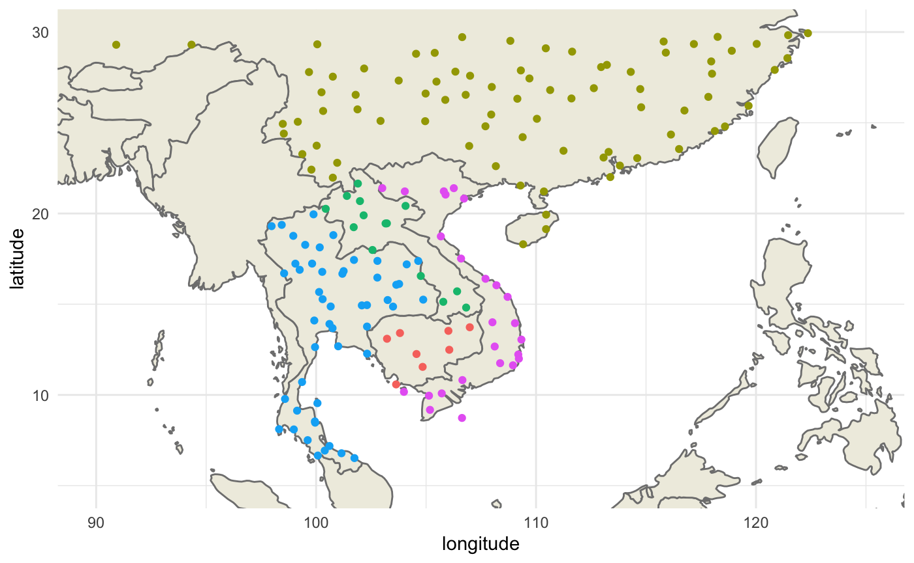
Then we extract the routes that link these airports together:
library(tidyverse)
routes <- read_csv("~/Dropbox/C-Leuven Projects/Nosoi/Nosoi-Rpackage/Dengue Data/routes.dat", col_names = FALSE)
colnames(routes) = c("Airline", "AirlineID", "SourceAirport", "SourceAirportID", "DestinationAirport",
"DestinationAirportID","Codeshare", "Stops", "Equipment")
routes$SourceAirportID = as.numeric(routes$SourceAirportID)
routes$DestinationAirportID = as.numeric(routes$DestinationAirportID)
# Airline 2-letter (IATA) or 3-letter (ICAO) code of the airline.
# Airline ID Unique OpenFlights identifier for airline (see Airline).
# Source airport 3-letter (IATA) or 4-letter (ICAO) code of the source airport.
# Source airport ID Unique OpenFlights identifier for source airport (see Airport)
# Destination airport 3-letter (IATA) or 4-letter (ICAO) code of the destination airport.
# Destination airport ID Unique OpenFlights identifier for destination airport (see Airport)
# Codeshare "Y" if this flight is a codeshare (that is, not operated by Airline, but another carrier), empty otherwise.
# Stops Number of stops on this flight ("0" for direct)
# Equipment 3-letter IATA codes for plane type(s) generally used on this flight, separated by spaces
#get airport information from:
routes = dplyr::left_join(routes, airports2, by=c("SourceAirportID"="AirportID")) #origin
routes = dplyr::left_join(routes, airports2, by=c("DestinationAirportID"="AirportID"), suffix=c(".FR",".TO")) #destination
routes.sub = subset(routes, ICAO.TO %in% unique(airports2.sub$ICAO) & ICAO.FR %in% unique(airports2.sub$ICAO))
#differentiation of national & international routes:
routes.sub = routes.sub %>% mutate(type=ifelse(Country.FR == Country.TO, "National","International"))
ggplot() + worldmap + coord_cartesian(xlim=c(90, 125),ylim=c(5, 30)) +
geom_curve(data=routes.sub, aes(x = Longitude.FR, y = Latitude.FR, xend = Longitude.TO, yend = Latitude.TO, color=type), alpha=0.1,curvature = 0.3) +
labs(x="longitude",y="latitude") +
scale_color_manual(name="Route type",values=c("red","gray70")) +
theme(panel.background = element_blank(), panel.ontop = FALSE,
panel.grid.major = element_line(size=0.25, linetype="dashed", colour ="grey70"),
axis.ticks=element_blank(),
plot.caption=element_text(size=10)) 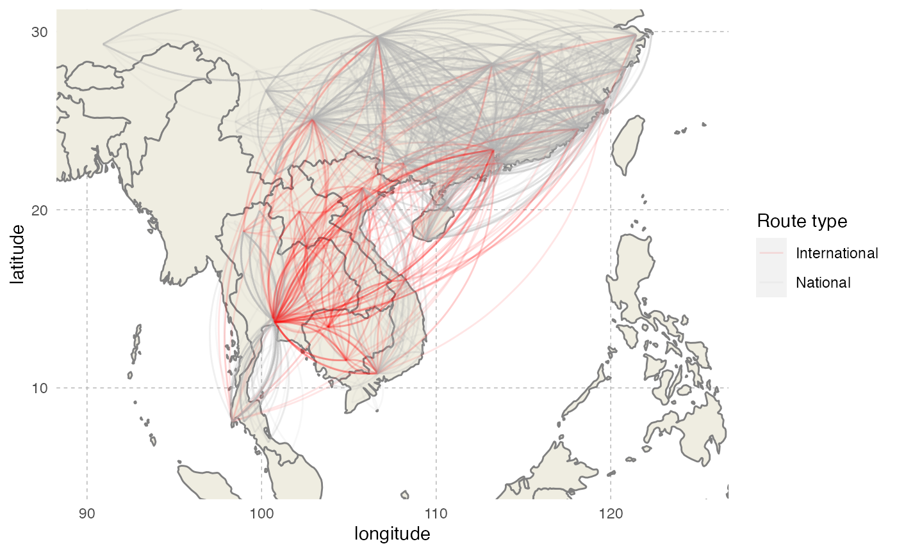
We will subset to keep only routes between two different countries, and create the connectivity matrix. The number of routes for each destination will then serve to compute destination probabilities for each origin country, thus creating the transition.matrix needed by nosoi:
#Keeping international routes
routes.sub = subset(routes.sub, type == "International")
#Create data.frame for futur matrix
df = expand.grid(From=SE.Asia, To=SE.Asia)
df = subset(df, From != To)
df$N = NA
#counting each route for each country combination
for(i in 1:nrow(df)){
df[i,"N"] = nrow(subset(routes.sub, Code3.FR == as.character(df[i,]$From) & Code3.TO == as.character(df[i,]$To)))
}
#create matrix layout
df.matrix = df %>% spread(To, value=N, fill= 0)
df.matrix = as.matrix(df.matrix[-1])
rownames(df.matrix) = colnames(df.matrix)
#Get probabilities (beware, rows should sum up to 1)
df_transpose = t(df.matrix)
probabilities <- apply(df_transpose, 1, function(i) i/sum(i))
transition.matrix = t(probabilities)We can represent this transition matrix on a map:
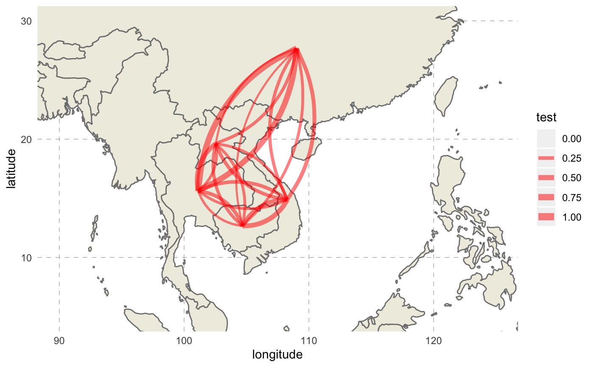
Simulation parameters
Host A: Humans
pExit
In Fontaine et al., humans do not die from the dengue infection, but exit the simulation when their transmission probability approaches 0 on its way down (see below). To approximate this behavior, we will use one of the parameters used in pTrans, called Md_human, which is the time since infection at which pTrans equals 50% of its maximum value. We will assume here that after three times this period, an infected human cannot transmit the virus any more and will thus exit the simulation:
pMove
The daily probability to move pMove for a host is empirically set to 0.01 (1% chance for a host to move each day).
nContact
This parameter was detailed before and depends on the location and the “absolute” time of the simulation.
n_contact_human = function(t, prestime, current.in) {
#functions
R.activity = function(temp){0.0011*(1-exp(0.0101*(temp-40)))*(temp-10)*3.445}
fun1 = function(x, k1, k2, Beta){k1*sin(2*pi/365*x)+k2*cos(2*pi/365*x) + Beta}
fun2 = function(x, k1, k2, Beta) {
R.activity = function(temp){0.0011*(1-exp(0.0101*(temp-40)))*(temp-10)*3.445}
temp = R.activity(fun1(x, k1, k2, Beta))/0.008001941
if (temp <= 0) return(0)
if (temp > 0) return(temp)}
#temp results depending of location
if (current.in == "CHN") {mosquito.activity = fun2(prestime, -2.7250361, 8.2347735, 15.35648)}
if (current.in == "KHM") {mosquito.activity = fun2(prestime, 0.8137334, -1.4049071, 26.79546)}
if (current.in == "LAO") {mosquito.activity = fun2(prestime, -0.2478662, -3.7164672, 23.09855)}
if (current.in == "THA") {mosquito.activity = fun2(prestime, 0.8709198, -2.064461, 26.28191)}
if (current.in == "VNM") {mosquito.activity = fun2(prestime, -0.6151016, -3.7640298, 23.49819)}
#final result
temp.contact2 = round(rnorm(1,mosquito.activity*2,sd=1))
if(temp.contact2 >= 0) final.contact = temp.contact2
if (temp.contact2 < 0) final.contact = 0
return(final.contact)
}
pTrans
Fontaine et al. model the transmission probability of a human to a mosquito using a 5-parameter equation based on two logistic functions, allowing the value of pTrans to go up in time, reach a plateau and then decrease over time:
p_Trans_fct_human <- function(t, K_human, Mg_human, Bg_human, Md_human, Bd_human) {
K_human*1/2*((1+tanh((t-Mg_human)/Bg_human))-(1+tanh((t-Md_human)/Bd_human)))
}Each parameter, except t (time since infection), corresponds to individually set parameters, mimicking heterogeneity among hosts:
-
\(K_{human}\) (
K_human), the maximum probability of transmission. -
\(M\gamma\) (
Mg_human), the time when 50% \(K_{human}\) is reached during the ascending phase. -
\(B\gamma\) (
Bg_human), the slope of the ascending curve. -
\(M\delta\) (
Md_human), the time when 50% \(K_{human}\) is reached during the descending phase. -
\(B\delta\) (
Bd_human), the slope of the descending curve.
#Dynamics of viremia in vertebrate (see Fontaine et al. for justification)
K_human_fct <- function(x){rbeta(x,0.98,0.002)}
Mg_human_fct <- function(x){rnorm(x,4.844,0.5)}
Bg_human_fct <- function(x){rnorm(x,2.536,0.2)}
Md_human_fct <- function(x){rnorm(x,8.392,0.5)}
Bd_human_fct <- function(x){rnorm(x,4.038,0.2)}
param.pTrans_human <- list(K_human=K_human_fct, Mg_human=Mg_human_fct, Bg_human=Bg_human_fct, Md_human=Md_human_fct, Bd_human=Bd_human_fct) The profile of pTrans over time since infection of 150 unique hosts will look like this (red is the mean value for each parameter): 
Host B: Mosquitoes
pExit
In Fontaine et al., the daily survival probability of a mosquito is 0.85, so its pExit equals 1-0.85:
nContact
In Fontaine et al., the daily biting probability of a mosquito is 0.3. We assume that if a mosquito bites, it bites only one human:
pTrans
In Fontaine et al., the probability of transmission from a mosquito to a human is approximated by the measure of dissemination, a proxy for the extrinsic incubation period (EIP). We will assume here that pTrans is defined in the form of a threshold function: before a certain amount of time since initial infection (EIP), the mosquito does not transmit (t_EIP), and after that time, it will transmit with a certain (constant) probability (which we will call p_max). This function will be dependent on the time since the mosquito’s infection t:
Based on experimental data from a Thai viral isolate in a Thai mosquito population in Fontaine et al., the distribution in the mosquito population for the EIP parameter is (you can see the vector competence example for more details):
Running nosoi
## Loading required package: data.table##
## Attaching package: 'data.table'## The following objects are masked from 'package:dplyr':
##
## between, first, last## The following object is masked from 'package:purrr':
##
## transpose## The following object is masked from 'package:raster':
##
## shift#Transition matrix
# transition.matrix
#Host A: Humans -----------------------------------
#pExit
p_Exit_fct_human <- function(t,Md_human){
if(t < 3*Md_human){p=0}
if(t >= 3*Md_human){p=1}
return(p)
}
#pMove
p_Move_fct_human <- function(t){return(0.01)}
#nContact
n_contact_human = function(t, prestime, current.in) {
#functions
R.activity = function(temp){0.0011*(1-exp(0.0101*(temp-40)))*(temp-10)*3.445}
fun1 = function(x, k1, k2, Beta){k1*sin(2*pi/365*x)+k2*cos(2*pi/365*x) + Beta}
fun2 = function(x, k1, k2, Beta) {
R.activity = function(temp){0.0011*(1-exp(0.0101*(temp-40)))*(temp-10)*3.445}
temp = R.activity(fun1(x, k1, k2, Beta))/0.008001941
if (temp <= 0) return(0)
if (temp > 0) return(temp)}
#temp results depending of location
if (current.in == "CHN") {mosquito.activity = fun2(prestime, -2.7250361, 8.2347735, 15.35648)}
if (current.in == "KHM") {mosquito.activity = fun2(prestime, 0.8137334, -1.4049071, 26.79546)}
if (current.in == "LAO") {mosquito.activity = fun2(prestime, -0.2478662, -3.7164672, 23.09855)}
if (current.in == "THA") {mosquito.activity = fun2(prestime, 0.8709198, -2.064461, 26.28191)}
if (current.in == "VNM") {mosquito.activity = fun2(prestime, -0.6151016, -3.7640298, 23.49819)}
#final result
temp.contact2 = round(rnorm(1,mosquito.activity*2,sd=1))
if(temp.contact2 >= 0) final.contact = temp.contact2
if (temp.contact2 < 0) final.contact = 0
return(final.contact)
}
#pTrans
p_Trans_fct_human <- function(t, K_human, Mg_human, Bg_human, Md_human, Bd_human) {
K_human*1/2*((1+tanh((t-Mg_human)/Bg_human))-(1+tanh((t-Md_human)/Bd_human)))
}
K_human_fct <- function(x){rbeta(x,0.98,0.002)}
Mg_human_fct <- function(x){rnorm(x,4.844,0.5)}
Bg_human_fct <- function(x){rnorm(x,2.536,0.2)}
Md_human_fct <- function(x){rnorm(x,8.392,0.5)}
Bd_human_fct <- function(x){rnorm(x,4.038,0.2)}
param.pTrans_human <- list(K_human=K_human_fct, Mg_human=Mg_human_fct, Bg_human=Bg_human_fct, Md_human=Md_human_fct, Bd_human=Bd_human_fct)
#Host B: Mosquitoes -----------------------------------
#pExit
p_Exit_fct_mosquito <- function(t){return(0.15)}
#pMove
p_Move_fct_mosquito <- NA
#nContact
nContact_fct_mosquito <- function(t){sample(c(0,1),1,prob=c(0.7,0.3))}
#pTrans
p_Trans_fct_mosquito <- function(t, p_max, t_EIP){
if(t < t_EIP){p=0}
if(t >= t_EIP){p=p_max}
return(p)
}
p_max_fct <- function(x){rbinom(x,1, 0.98)}
t_EIP_fct <- function(x){rlogis(x, location = 5.15, scale = 1/1.24)}
param_pTrans_mosquito <- list(p_max=p_max_fct,t_EIP=t_EIP_fct)
# Starting the simulation ------------------------------------
set.seed(60)
test.nosoiA <- nosoiSim(type="dual", popStructure="discrete",
length.sim=365,
max.infected.A=5000,
max.infected.B=200000,
init.individuals.A=1,
init.individuals.B=0,
init.structure.A="VNM",
init.structure.B=NA,
structure.matrix.A=transition.matrix,
structure.matrix.B=transition.matrix,
#Human
pExit.A = p_Exit_fct_human,
param.pExit.A = list(Md_human=Md_human_fct),
timeDep.pExit.A=FALSE,
diff.pExit.A=FALSE,
pMove.A = p_Move_fct_human,
param.pMove.A = NA,
timeDep.pMove.A=FALSE,
diff.pMove.A=FALSE,
nContact.A=n_contact_human,
param.nContact.A=NA,
timeDep.nContact.A=TRUE,
diff.nContact.A=TRUE,
pTrans.A = p_Trans_fct_human,
param.pTrans.A = param.pTrans_human,
timeDep.pTrans.A=FALSE,
diff.pTrans.A=FALSE,
prefix.host.A="H",
#Mosquito
pExit.B = p_Exit_fct_mosquito,
param.pExit.B = NA,
timeDep.pExit.B=FALSE,
diff.pExit.B=FALSE,
pMove.B = p_Move_fct_mosquito,
param.pMove.B = NA,
timeDep.pMove.B=FALSE,
diff.pMove.B=FALSE,
nContact.B=nContact_fct_mosquito,
param.nContact.B=NA,
timeDep.nContact.B=FALSE,
diff.nContact.B=FALSE,
pTrans.B = p_Trans_fct_mosquito,
param.pTrans.B = param_pTrans_mosquito,
timeDep.pTrans.B=FALSE,
diff.pTrans.B=FALSE,
prefix.host.B="M",
print.progress=FALSE)## Starting the simulation
## Initializing ...## running ...## done.
## The simulation has run for 96 units of time and a total of 5253 (A) and 16699 (B) hosts have been infected.The simulation has run for 96 units of time and has infected 5253 humans and 1.669910^{4} mosquitoes. The simulation was stopped because it reached the infected human cap max.infected.A.
Analyzing the results
Visualization
Our first step will be to visualize this epidemic on the map. We can use the following code to produce an animation (in time) of the epidemic:
#Packages needed:
library(ggplot2); library(gganimate)
library(tidyverse)
#melting the matrix go get from -> to in one line with probability
melted.transition.matrix <- reshape2::melt(transition.matrix, varnames = c("from","to"),value.name="prob", as.is = TRUE)
melted.transition.matrix = subset(melted.transition.matrix, prob!=0)
#Loading data from the simulation
test.nosoiA.data <- getTableState(test.nosoiA)
#Loop to get the number of infected in each state per unit of time
results <- data.frame()
for (i in 1:max(test.nosoiA.data$time.from)) {
temp <- subset(test.nosoiA.data, time.from <= i & c(time.to > i |is.na(time.to)))[,c("hosts.ID","state")]
temp$time <- i
results <- data.table::rbindlist(c(list(temp),list(results)))
}
test2 <- results %>% dplyr::group_by(time,state) %>% summarise(N=length(hosts.ID))
#Loop to get the transitions between states and their time
results2=data.frame()
for (i in unique(test.nosoiA.data$hosts.ID)) {
subset.current <- test.nosoiA.data[i]
if(nrow(subset.current) > 1){
for (j in 1:(nrow(subset.current)-1)){
temp <- data.table(hosts.ID=i,time=as.integer(subset.current[j]$time.to),from=subset.current[j]$state,to=subset.current[j+1]$state)
results2 <- data.table::rbindlist(c(list(temp),list(results2)))
}}}
test3 <- results2 %>% group_by(time,from,to) %>% summarise(N=length(hosts.ID))
#adding the coordinates of each country
test2.bis = left_join(test2,countries.point, by=c("state"="country"))
test3.bis = left_join(test3,countries.point,by=c("from" = "country"))
test3.bis = left_join(test3.bis,countries.point,by=c("to" = "country"), suffix=c("from","to"))
#Worldmap background
worldmap <- ggplot2::borders("world", colour="gray50", fill="#efede1",t=1:182)
#Animated plot (using gganimate):
animated.plot <- ggplot() +
theme_void() + worldmap + coord_cartesian(xlim=c(90, 125),ylim=c(5, 30)) +
geom_point(data=test2.bis,aes(long,lat, color=state,size=N)) +
geom_curve(data=test3.bis, aes(x=longfrom,y=latfrom,xend=longto,yend=latto),arrow = arrow(length = unit(0.03, "npc"),type = "closed"),curvature = 0.2,color="gray50") + scale_color_discrete(guide=FALSE) +
transition_states(time) + scale_size_continuous(name="Number of \n infected humans", trans="log10", range = c(2, 15)) +
labs(title = "Time: {closest_state}")
animate(animated.plot, nframes=test.nosoiA$total.time*2+10,duration=40,end_pause=10)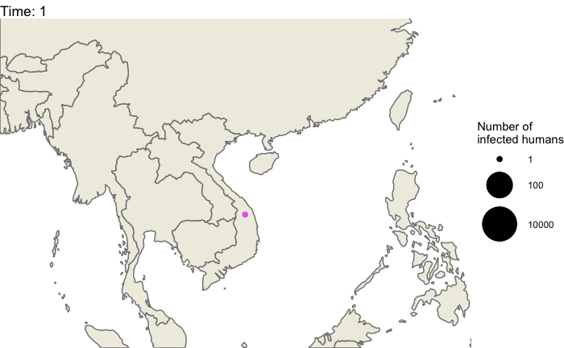
Epidemiological analysis
As interesting as the visualization might be, we can also explore the epidemic parameters, for example the “real” \(R_0\), defined as the average number of cases one case generates, often estimated in epidemiological studies. To this end, we can use the following code:
The mean value for \(R_0\) is 3.23, which is coherent with \(R_0\) estimates for dengue (see for example Nishiura 2006 Dengue Bulletin). Its distribution shows that most of the human hosts are responsible for the infection of a least one other human host:
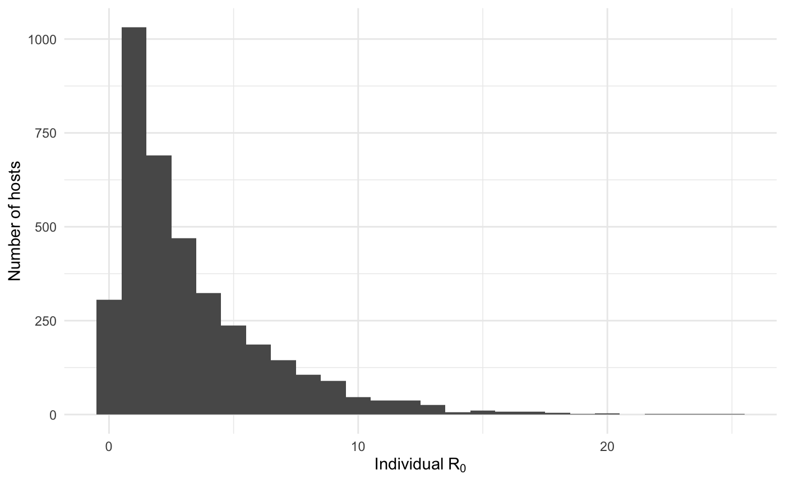
On the mosquito side, the mean value for \(R_0\) is 0.27 and the distribution shows that most of the mosquitoes, except for a few, are actually dead-end hosts: 
The two following figures also provide the epidemiological dynamics of the simulation:
library(ggplot2)
cumulative.table <- getCumulative(test.nosoiA)
dynamics.table <- getDynamic(test.nosoiA)
ggplot(data=cumulative.table, aes(x=t, y=Count,linetype=type)) + geom_line() + theme_minimal() + labs(x="Time (t)",y="Cumulative count of infected hosts")
ggplot(data=dynamics.table, aes(x=t, y=log10(Count), color=state,linetype=type)) + geom_line() + theme_minimal() + labs(x="Time (t)",y="Number of active infected hosts\n(log10 scale)")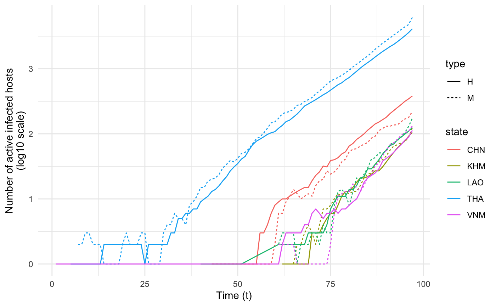
Transmission chain
The central transmission chain simulated by nosoi can also be visualized. To achieve this, we generate the transmission tree as a phylogenetic tree-like object by using the getTransmissionTree function implemented in nosoi:
This function gives you a treedata object that can be visualized as a phylogenetic tree with the package :
library(ggtree)
ggtree(test.nosoiA.tree, color = "gray30") + geom_tippoint(color = "gray30") + # geom_tiplab(aes(label=host)) +
theme_tree2() + xlab("Time (t)") + theme(legend.position = c(0,0.8),
legend.title = element_blank(),
legend.key = element_blank())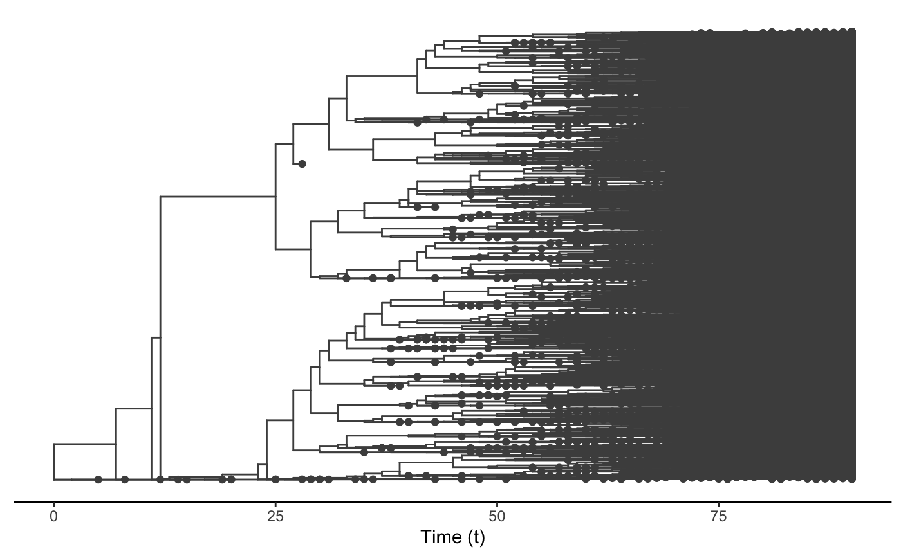
This tree is a bit messy, which was to be expected considering the number of transmission events and the overall size of this epidemic. We can also subsample it randomly. We will here select 150 individuals sampled at the time of their exit (either death or recovery):
#Extracts data from the nosoiSim object:
test.table.hosts <- getTableHosts(test.nosoiA, pop="A")
# test.nosoiA.tree <- getTransmissionTree(test.nosoiA)
#Sampling the names of individuals to be sampled:
set.seed(5905950)
sampled.hosts <- sample(subset(test.table.hosts, active == 0)$hosts.ID, 150)
#Subsampling:
test.nosoiA.tree.sampled.exiting <- sampleTransmissionTreeFromExiting(test.nosoiA.tree, sampled.hosts)This new tree can be also plotted as before, with colors representing the state (i.e. country) of each tip and node:
library(ggtree)
ggtree(test.nosoiA.tree.sampled.exiting, color = "gray30") + geom_nodepoint(aes(color=state)) + geom_tippoint(aes(color=state)) + # geom_tiplab(aes(label=host)) +
theme_tree2() + xlab("Time (t)") + theme(legend.position = c(0.05,0.8),
legend.title = element_blank(),
legend.key = element_blank())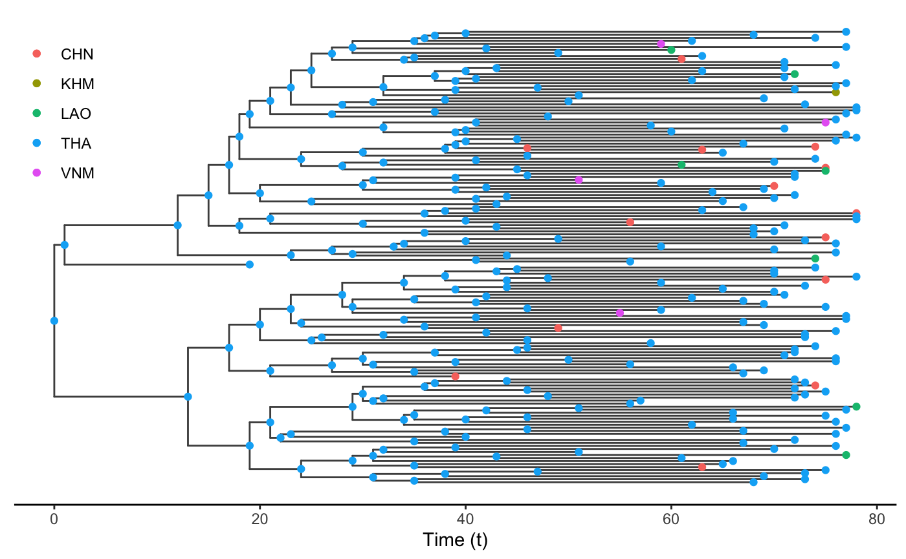
Other use
External software can be used to perform a more detailed exploration of the dynamics of this epidemic and transmission chain. The write.beast function of the treeio package allows for an easy export of the transmission chain as a phylogenetic-like tree, in a similar format as BEAST trees.